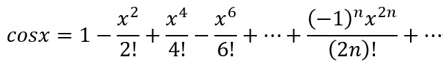
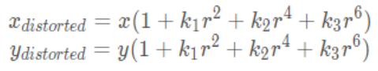
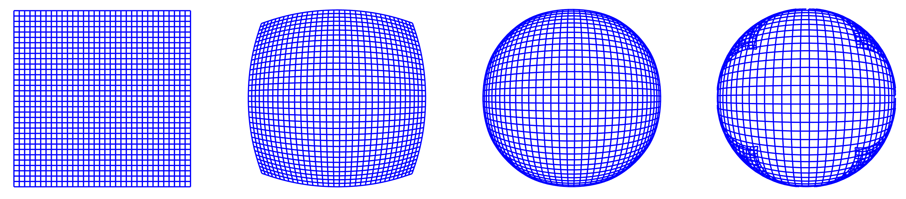

本文主要记载了关于镜头径向畸变和切向畸变的建模过程。
径向畸变
计算径向畸变
文章 大眼睛特效 对径向畸变的叙述。
点 (x,y) 到圆心的距离为:
r=x2+y2
我们可以对像素使用一个非线性变换 T 使得点到圆心的距离 r 变为 rd, 然后增加 rd 和 r 的比例关系，将点的坐标从 (x,y) 变换到 (xd,yd)
rd=r+T(r)
xd=rxrd
yd=ryrd
所以最终镜像畸变的问题变成了找出一个合适的非线性变换 T. 有许多这样的变换方法，这里有由于我们的坐标有正负之分，而且我们的畸变是对称的，所以我们可以选择使用 cos 函数:
rd=r+k⋅rcos(πr)(1)
由于 cos 函数的泰勒展开式为

可以近似写作，
cos(r)=1−2!r2+4!r4−6!r6+⋯=1+k1r2+k2r4+k3r6
则 (1) 式可以写作
rd=r+k⋅r(1+k1(πr)2+k2(πr)4+k3(πr)6))
则
xd=x(1+k(1+k1π2r2+k2π4r4+k3π6r6))=x(1+k+kk1π2r2+kk2π4r4+kk3π6r6)
可以近似写作
xd=x(1+K1r2+K2r4+K3r6)
这也与径向畸变的模型相符
文章 机器视觉模型——畸变模型 对径向畸变的描述。
由于这种畸变是从中心沿径向方向向外分布的，我们用 r=0 处的泰勒级数展开的前几项来近似描述径向畸变。径向畸变前后的坐标关系为

式中：
xdistorted ,ydistorted ——原畸变图像坐标
x,y —— 正确坐标（无畸变图像坐标，或校正后坐标）
r —— 半径， r2=x2+y2
k1,k2,k3 —— 引入的径向畸变参数
由于径向畸变模型中 r 的存在，可以推出，距离中心距离相等的圆上的像素的失真效果是一样的。这也可以从下图看出
